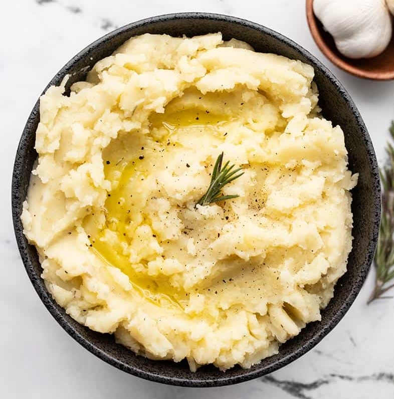

Olive Oil Mashed Potatoes

Description
These dairy-free Olive Oil Mashed Potatoes are light, fluffy,
and seasoned with hefty dose of garlic, rosemary, and cracked black pepper.
Ingredients
- 2.5 lbs. russet potatoes
- 1/2 tsp salt (for cooking water)
- 4 cloves garlic
- 1/4 cup extra virgin olive oil
- 1/2 tsp dried rosemary
- 1 cup vegetable broth, warmed
- freshly cracked black pepper
- salt to taste (about 3/4 tsp)
Steps
- Peel and dice the potatoes into 1-inch cubes.
Place the potato cubes in a colander and rinse well with cool water
to remove the excess starch.
- Place the rinsed potatoes in a large pot,
fill it with enough water to cover the potatoes by one inch, then add 1/2 tsp salt.
- Cover the pot with a lid, place the pot over high heat, and bring it up to a boil.
Once boiling, remove the lid, and reduce the heat to medium.
Continue to boil the potatoes for about 10 minutes,
or until they are very soft (they should break apart when pierced with a fork).
- While the potatoes are boiling, prepare the garlic infused olive oil.
Mince the garlic and add it to a small sauce pot or skillet with the olive oil.
Heat the oil and garlic over medium-low heat. Let the garlic sizzle in the oil for 1-2 minutes,
or just until the garlic is slightly softened, but not brown.
You just want to take the spicy raw bite off the garlic flavor.
Remove the sauce pot from the heat and set it aside.
- Drain the boiled potatoes in a colander and rinse again, briefly, with warm water.
Return the rinsed and drained potatoes to the pot, with the heat turned off.
Add garlic and oil, dried rosemary, some freshly cracked pepper
(about 10 cranks of a pepper mill), and about 1/2 cup warmed vegetable broth.
- Mash the potatoes or use a mixer to whip them until light and fluffy,
adding more vegetable broth as needed to keep them soft and moist
(I used about 3/4 cup total broth). Taste the mashed potatoes
and season to taste with salt and pepper.
Remember, adding an adequate amount of salt
will help the flavors pop. Serve warm.